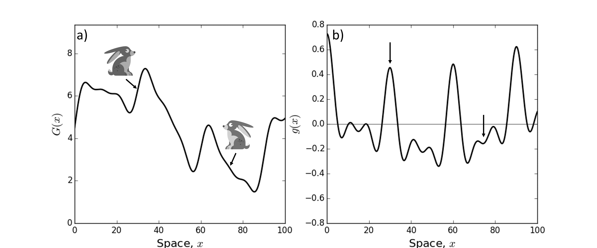
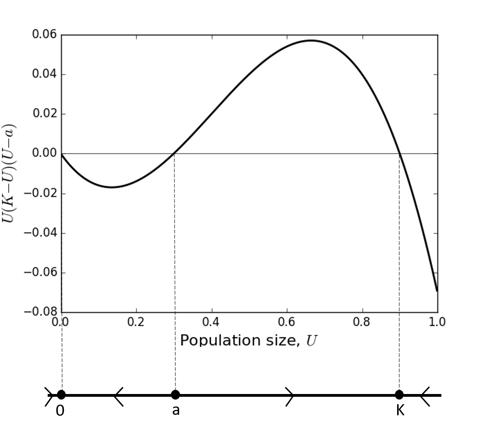

Lecture 8. Nature’s non-linearity and the need for qualitative solutions#
Many larger, sexually-reproducing animals disperse as adolescents to find a new place to live. This is probably an evolved tactic to make it less likely for individuals to mate with those they are closely related to (that’s why humans disperse to different universities as teenagers, right?).
A dispersing animal will want to find the ‘best place’ to live on the landscape, which may mean the place with the most access to the resources it needs, or away from danger, or a combination thereof. Suppose we can quantify the ‘quality’ of the landscape (as perceived by the animal) as a function \(G(x)\), where \(x\) is space. Here we are assume (for simplicity despite lack of realism) that the landscape is one dimensional. Then a simple model of animal movement might assume that the change in location over time is equal to the gradient of \(G(x)\) (Figure 9), so define \(g(x)=\frac{\mathrm{d} G}{\mathrm{~d} x}\).
Figure 9: Panel (a) shows an example landscape whose quality (for a dispersing animal) is given by a function \(G(x)\). If the animal is at a place where the gradient of \(G(x)\) is positive, such as the rabbit on the left-hand side at \(x \approx 30\), the animal will move to the right. On the other hand, if the gradient of \(G(x)\) is negative, such as at \(x \approx 75\), the animal will move left. Panel (b) shows \(g(x)\), the gradient of \(G(x)\). The left-hand arrow shows the point where the left-hand rabbit from Panel (a) resides. Note that the value of \(g(x)\) is positive here. The right-hand arrow shows the point where the right-hand rabbit from Panel (a) resides, where \(g(x)\) is negative.
An equation describing the location of the animal, \(x\), at time \(t\) might be
Now you might think ‘Ah, this is a separable first order ODE; I know how to solve this!’
Indeed, the solution is (Section 5.3)
where \(c\) is a constant. But it might not be easy to compute the left-hand side of Equation (97). Even if you do, you will ultimately have to invert the resulting function to get a solution with \(x(t)\) as the subject.
For example, if \(g(x)=\sin (x)\), we have
It’s not so straightforward to calculate the integral of \(1 / \sin (x)\) (Challenge: try to do it by hand! It can be done, but takes some thought.) One can use Wolfram Alpha to help, and you will find
But you now have to invert this, which is also tough. It is possible to find the solution eventually (it’s \(x(t)=2 \cot ^{-1}\left(\exp ^{c-t}\right)\) ), but it would be valuable to get some insight into the model without having to do tricky integration or rely on computer packages such as Wolfram Alpha. Furthermore, \(g(x)\) could be way more complicated than a simple sine wave. Indeed, in reality it is likely to be some function for which we do not have a simple closed-form solution: there is no reason to suppose that the quality of a landscape will follow a nice algebraic expression!
This is where qualitative analysis steps in. The idea is that, even if we cannot solve an ODE exactly, we can still find out certain properties of the solution to the ODE. These usually consist of asymptotic properties, i.e. those related to the behaviour of the solution at long times.
8.1 Phase lines#
The first qualitative method we will look at is the construction of a phase line. We will start with the example from Equation (96) with \(g(x)=\sin (x)\), i.e.
Notice three things:
For any value of \(x\) such that \(\sin (x)=0, x\) is stationary,
For any value of \(x\) such that \(\sin (x)>0, x\) is moving to the right,
For any value of \(x\) such that \(\sin (x)<0, x\) is moving to the left.
We can draw a diagram of this, as shown in Figure (10). We simply draw a straight line, put dots at the points where \(\sin (x)=0\), and flow arrows denoting the direction of change of \(x\). This is called the phase line.
Figure 10: Here we plot \(\sin (x)\) with the corresponding phase line beneath. We can see that the unstable equilibria are \(x=2 \pi n\) for \(n \in \mathbb{Z}\) whilst the stable equilibria are \(x=(2 n+1) \pi\) for \(n \in \mathbb{Z}\).
Notice that there is nothing special here about the sine function. It is entirely possible to construct a phase line for Equation (96) with any continuous function \(g(x)\). We see an example with a rather more wiggly function in Figure 11. (In this case, we have not shown all the flow arrows as some of the equilibria are too close together to display the arrows easily.)
Definition 12
An autonomous first order ODE is one of the form
Notice that \(g\) is a function of \(U\) but not of \(t\). A non-autonomous first order ODE is a first order ODE that is not autonomous (unsurprisingly).
We can construct the phase line for any autonomous first order ODE (but not for nonautonomous ODEs). The method can be summarised as follows
Draw a line (representing the real numbers),
Put a point on the line at any value of \(U\) such that \(g(U)=0\),
Between each pair of consecutive points, draw an arrow to the right if \(g(U)>0\) or to the left if \(g(U)<0\).
Figure 11: Here we plot the function \(g(x)\) from Figure 9 with the corresponding phase line beneath. If the animal starts at around \(x \approx 30\) (see the left-hand downwards-pointing arrow) then it will move right towards the equilibrium point at \(x \approx 35\), because the arrow on the phase line points right. If the animal starts at around \(x \approx 75\) (see the right-hand downwardspointing arrow) then it will move left, eventually settling at the equilibrium point at \(x \approx 63\), because the arrow on the phase line points left.
8.2 Equilibrium points and stability#
What sort of questions can we answer with phase lines? We can gain insight into a few concepts that we will now define.
Definition 13
For an autonomous first order ODE
the stable states (also known as equilibrium points or equilibria) are the points \(U=U_{*}\) where \(g\left(U_{*}\right)=0\).
Definition 14
An equilibrium point, \(U_{*}\), is asymptotically stable if there is some \(\epsilon>0\) such that \(U(t) \rightarrow U_{*}\) as \(t \rightarrow \infty\) whenever \(U_{*}-\epsilon<U(0)<U_{*}+\epsilon\).
These definitions are easier to appreciate if we look at a phase line (e.g. Figure 11). Here, the equilibria are simply the points where we have dots marked on the line (where \(g(U)=0\) ). If the arrows either side of an equilibrium point both point towards that point then the point is stable. Otherwise, it is unstable. So this is a really easy method for finding the equilibria of an autonomous ODE and their stability. It requires no calculations whatsoever, just some simple sketching. Nice!
Figure 12: The function \(U(K-U)(U-a)\) is shown with the corresponding phase line beneath. For the purposes of this plot, we have set \(K=0.9\) and \(a=0.3\).
Going back to the example of a dispersing animal, we may want to know ‘where does the animal end up?’ The simple answer is ‘at one of the stable equilibria’. If you know the initial condition, you can also tell which one: just follow the arrows on the phase line. This is explained more in the caption of Figure 11.
Example 12
Let \(U(t)\) be the number of organisms in a population. In the 1930s, a nowfamous study on goldfish showed that there needs to be a sufficiently high number of organisms for the reproductive rate to exceed the death rate. This has since been observed in a wide variety of contexts, and is named the Allee effect after the author of the goldfish study. The Allee effect may emerge simply because it is too hard to find a suitable mate when the population density is low (not enough fish in the sea, literally). Otherwise, it could be due a complex social structure being required for bringing up young who themselves are able to reproduce. In any case, such a population can be described by the following ODE model
where \(K\) is the carrying capacity, as before (see e.g. Example 4) and \(a\) is the number of organisms below which \(\frac{\mathrm{d} U}{\mathrm{~d} t}\) is negative (this is sometimes called the Allee threshold). We assume \(0<a<K\).
(a) Find the equilibria of Equation (101),
(b) Plot the phase line for Equation (101),
(c) Use the phase line to determine the stability of each of the equilibrium points,
(d) If \(0<U(0)<a\) what is the limit as \(t \rightarrow \infty\) of \(U(t)\) ?
(e) If \(a<U(0)<K\) what is the limit as \(t \rightarrow \infty\) of \(U(t)\) ?
Solution.#
(a) The equilibria are where \(U(K-U)(U-a)=0\), so \(U=0\), \(a\), or \(K\).
(b) Figure 12 shows the phase line.
(c) The arrows on the phase line (Figure 12) point into \(U=0\), so \(U=0\) is a stable equilibrium point. They point out of \(U=a\) so \(a\) is unstable, and into \(U=K\) so \(K\) is stable.
(d) Looking at the phase line (Figure 12) between \(U=0\) and \(U=a\), we see that the arrow is pointing left towards the equilibrium point at \(U=0\). Hence \(U(t) \rightarrow 0\) as \(t \rightarrow \infty\).
(e) Looking at the phase line (Figure 12) between \(U=a\) and \(U=K\), we see that the arrow is pointing right towards the equilibrium point at \(U=K\). Hence \(U(t) \rightarrow K\) as \(t \rightarrow \infty\).
Lecture 8 Homework exercises#
Exercise 16
Plot the phase lines for
(a) \(\frac{\mathrm{d} U}{\mathrm{~d} t}=U(1-U)\)
(b) \(\frac{\mathrm{d} U}{\mathrm{~d} t}=\cos (U)\)
(c) \(\frac{\mathrm{d} U}{\mathrm{~d} t}=U^{3}-6 U^{2}+11 U-6\)
(d) \(\frac{\mathrm{d} U}{\mathrm{~d} t}=\sin (U) \exp (-U)\)
(e) \(\frac{\mathrm{d} U}{\mathrm{~d} t}=(U+2)(U-3)\)
(f) \(\frac{\mathrm{d} U}{\mathrm{~d} t}=(U-1)^{2}\)
Exercise 17
For each of the examples in the previous question, state the equilibria and their stability.
Exercise 18
For each of the following examples, if \(U(0)=1\) then what is the limit as \(t \rightarrow \infty\) of \(U(t)\) ?
(a) \(\frac{\mathrm{d} U}{\mathrm{~d} t}=U(2-U)\)
(b) \(\frac{\mathrm{d} U}{\mathrm{~d} t}=\cos (U)\)
(c) \(\frac{\mathrm{d} U}{\mathrm{~d} t}=\sin (U) \exp (-U)\)
(d) \(\frac{\mathrm{d} U}{\mathrm{~d} t}=(U+2)(U-3)\)
(e) \(\frac{\mathrm{d} U}{\mathrm{~d} t}=(U-2)^{2}\)